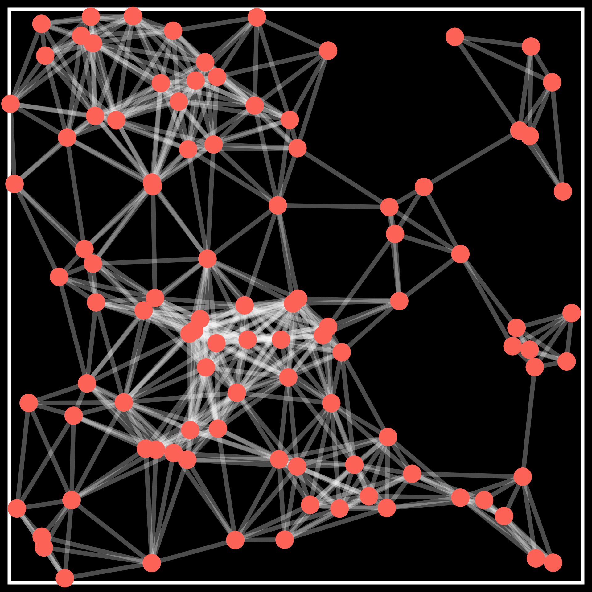
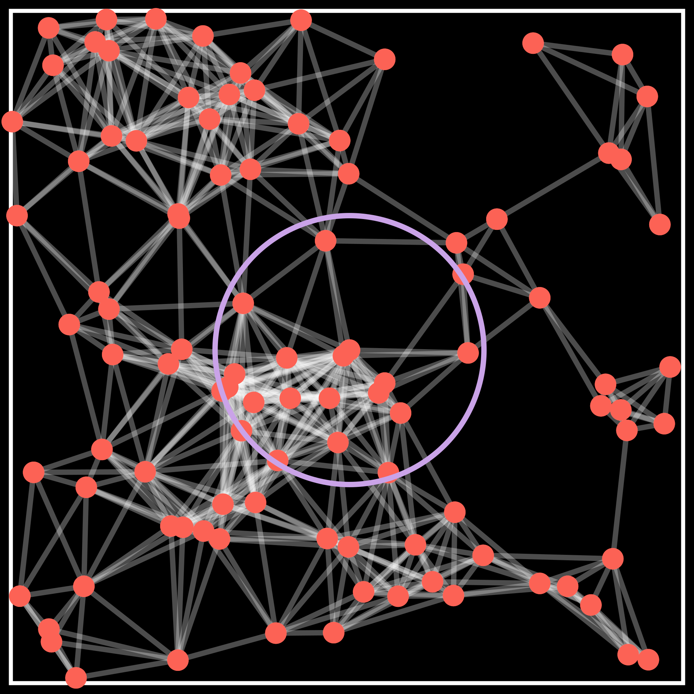
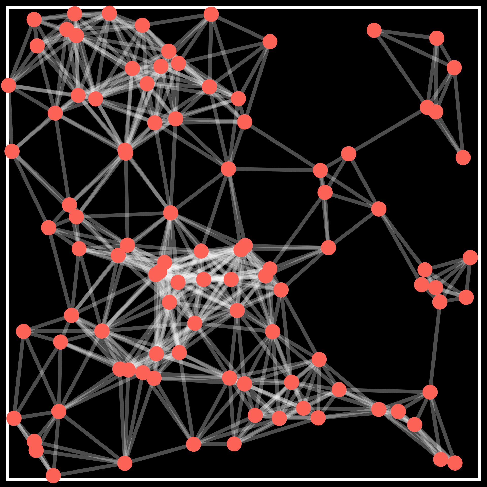
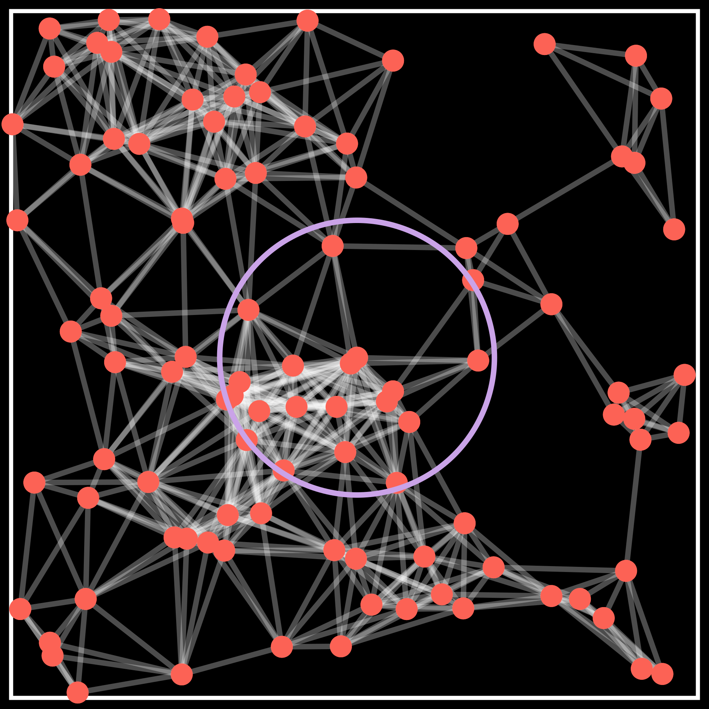
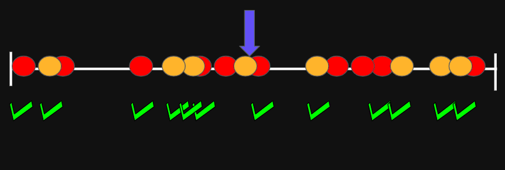
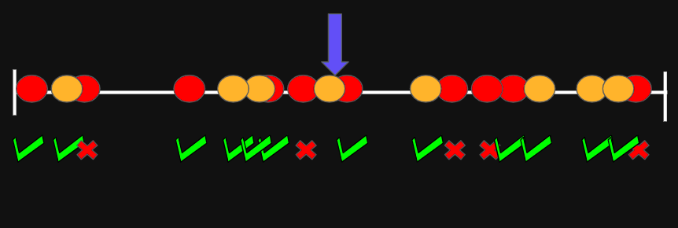
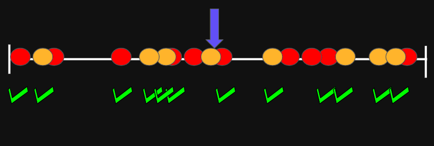
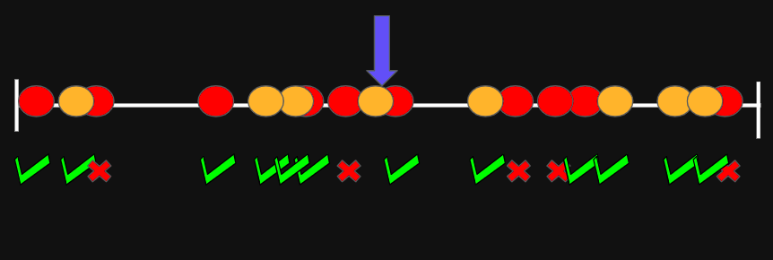

Research presentation
B. R. Vinay Kumar
International Institute of Information Technology-Bangalore
November 25, 2024
Background
Capture real-world phenomena using ideas from random graphs and network science.

Wireless networks


Social networks Data science
Background
Capture real-world phenomena using ideas from random graphs and network science.
Wireless networks
Social networks
Data science
- Geometric graphs? Vertices are embedded in a metric space and edges depend on the distance between nodes.
- Presence of short edges and abundance of triangles.
Questions?
- How does the network structure affect processes or information on the network?
- Can local algorithms help to solve a global problem?
- Does geometry help in solving a global problem efficiently?
Model for geometric graphs
 




Poisson point process on \(S=\left[\frac{-1}{2},\frac{1}{2}\right]^d\)
Given $n \ge 1$ and $\lambda >0$,- Sample $N \sim \text{Poi}(\lambda n)$.
- Choose \(X_1,X_2,\cdots,X_N\) uniformly from $S$.
- The collection \(\mathbb{X}\)\(= \{X_u\}_{u=1}^N\) forms PPP\((\lambda n)\).
Random connection model
- Geometric kernel: \(\varphi: \mathbb{R}_+ \to [0,1]\).
- Connect two nodes at $X_u$ and $X_v$ with probability \(\varphi \big(\frac{\|X_u-X_v\|}{\rho_n^{1/d}}\big)\), where \(\rho_n = \frac{\log n}{n}\)
- \(\varphi(r) = \mathbf{1}\{r \le 1\}\): random geometric graph
- General kernels
Probabilistic broadcast with coded packets
\(\hspace{15cm} k\) data packets
\(\hspace{15cm} n\) coded packets
- Goal Broadcast the $k$ data packets from the source with minimum transmissions.
- Coding scheme: Any node receiving at least $k$ out of the $n$ coded packets is able to recover the $k$ data packets from the source.

Spatial Queues


J. Kang, C. Kan, and Z. Lin, “Are Electric Vehicles Reshaping the City? An Investigation of the Clustering of Electric Vehicle Owners’ Dwellings and Their Interaction with Urban Spaces,” ISPRS International Journal of Geo-Information, vol. 10, no. 5, May 2021.
Model
- Charging stations distributed as a PPP
- Customers follow nearest neighbour mobility strategies
- Characterize overloaded servers in the system
- Spatial distribution of overloaded servers?
Community detection


Model
Torus \( S=\left[\frac{-1}{2},\frac{1}{2}\right]^d\)


\(\mathbf{A}\) \(\sim GKBM(\lambda,n,d,p,q,\varphi)\)
- Poisson point process \(\mathbb{X}\)\(= \{X_u\}_{u=1}^N\) of intensity \(\lambda n\)
- Two communities: \( \sigma\)\( = \big(\sigma(1),\cdots,\sigma(N)\big)\) \[\mathbf{P}(\sigma(u)=\color{#f86d6d}{+1})=\mathbf{P}(\sigma(u)=\color{#ffde20}{-1}) = \frac{1}{2}\]
- Geometric kernel: \(\varphi: \mathbb{R}_+ \to [0,1]\)
- Connection probabilities:
- Within community: $p$
- Between community: $q$
Given locations \(\mathbb{X}\) and communities \( \sigma\)
\[A_{uv}=1 \text{ w.p. }\begin{cases} p \varphi\Big(\big(\frac{n}{\log n}\big)^{1/d}\|X_u-X_v\|\Big) & \text{if } \sigma(u)=\sigma(v)\\ q \varphi \Big(\big(\frac{n}{\log n}\big)^{1/d}\|X_u-X_v\|\Big) & \text{if } \sigma(u) \neq \sigma(v) \end{cases}\]
Problem Formulation
\(\mathbf{A}\) \(\sim GKBM(\lambda,n,d,p,q,\varphi)\)
Problem: Given the locations \(\mathbb{X}\) and the graph \(\mathbf{A}\), recover \( \sigma_n\) exactly.


Problem Formulation
\(\mathbf{A}\) \(\sim GKBM(\lambda,n,d,p,q,\varphi)\)
Problem: Given the locations \(\mathbb{X}\) and the graph \(\mathbf{A}\), recover \( \sigma_n\) exactly.
Prior work
- Abbe, E., Baccelli, F., and Sankararaman, A., 2021. Community detection on Euclidean random graphs. Information and Inference: A Journal of the IMA, 10(1), 109-160.
- Gaudio, J., Niu, X. and Wei, E., 2024. Exact community recovery in the geometric SBM. In Proceedings of the 2024 Annual ACM-SIAM Symposium on Discrete Algorithms (SODA), 2158-2184.
- Gaudio, J., Guan, C., Niu, X. and Wei, E., 2024. Exact Label Recovery in Euclidean Random Graphs. arXiv preprint arXiv:2407.11163.
Model-1d
Torus \( S=\left[\frac{-1}{2},\frac{1}{2}\right]\)
\(\mathbf{A}\) \(\sim GKBM(\lambda,n,p,q,\varphi)\)
- Poisson point process \(\mathbb{X}\)\(= \{X_u\}_{u=1}^N\) of intensity \(\lambda n\)
- Two communities: \( \sigma\)\( = \big(\sigma(1),\cdots,\sigma(N)\big)\) \[\mathbf{P}(\sigma(u)=\color{#f86d6d}{+1})=\mathbf{P}(\sigma(u)=\color{#ffde20}{-1}) = \frac{1}{2}\]
- Geometric kernel: \(\varphi: \mathbb{R}_+ \to [0,1]\)
- Connection probabilities:
- Within community: $p$
- Between community: $q$
Given locations \(\mathbb{X}\) and communities \( \sigma\)
\[A_{uv}=1 \text{ w.p. }\begin{cases} p \varphi\Big(\frac{n}{\log n}\|X_u-X_v\|\Big) & \text{if } \sigma(u)=\sigma(v)\\ q \varphi \Big(\frac{n}{\log n}\|X_u-X_v\|\Big) & \text{if } \sigma(u) \neq \sigma(v) \end{cases}\]
Main results
Achievability: If \(\lambda \kappa >1\) and \(\lambda I_{\varphi}(p,q) > 1\), then there exists a linear time algorithm (in the number of edges) achieving exact recovery.
Impossibility: Idea
- Genie-based estimator: Log-likelihood
| In \( \mathcal{R}_s \) | Neighbours | Non-neighbours |
|---|---|---|
| Same | \(P_s^+ \sim \text{Poi}\big(\lambda \text{vol}(\Gamma_s) \log (n) pc_s \big)\) | \(P_s^- \sim \text{Poi} \big(\lambda \text{vol}(\Gamma_s) \log (n) (1-pc_s) \big)\) |
| Different | \(Q_s^+ \sim \text{Poi} \big(\lambda \text{vol}(\Gamma_s) \log (n) qc_s \big)\) | \(Q_s^- \sim \text{Poi} \big(\lambda \text{vol}(\Gamma_s) \log (n) (1-qc_s) \big)\) |
Impossibility: Idea
| In \( \mathcal{R}_s \) | Neighbours | Non-neighbours |
|---|---|---|
| Same | \(P_s^+ \sim \text{Poi}\big(\lambda \text{vol}(\Gamma_s) \log (n) pc_s \big)\) | \(P_s^- \sim \text{Poi} \big(\lambda \text{vol}(\Gamma_s) \log (n) (1-pc_s) \big)\) |
| Different | \(Q_s^+ \sim \text{Poi} \big(\lambda \text{vol}(\Gamma_s) \log (n) qc_s \big)\) | \(Q_s^- \sim \text{Poi} \big(\lambda \text{vol}(\Gamma_s) \log (n) (1-qc_s) \big)\) |
- Testing Poisson vectors: Prob. of error \(= n^{-\lambda \text{vol}(\Gamma_s) D_+(\mathbf{p},\mathbf{q})}\)
- Chernoff-Hellinger divergence: \[ D_+(\mathbf{p},\mathbf{q}) := 2\sum_{s = 1}^{\ell} \big[1-\sqrt{pq}c_s-\sqrt{(1-pc_s)(1-qc_s)} \big]\]
- Error probability \(\to n^{-\lambda I_\varphi(p,q)} \)
- Total number of errors \(\approx \lambda n^{1-\lambda I_\varphi(p,q)} \to \infty\) when \(\lambda I_{\varphi}(p,q) < 1\)
Achievability
Q. How to recover the communities exactly when \(\lambda I_{\varphi}(p,q) > 1\)?Two phase algorithm:
Recall \(\color{#FF7F50}{\kappa}\): maximum interaction distancePhase-I: Almost-exact recovery
- Divide into blocks of size \(\frac{\color{#FF7F50}{\kappa}}{2}\frac{\log n}{n}\)
- Recover exactly in an initial block
- Propagate from a recovered block to adjacent block and so on
Phase-II: Refinement step
- Genie-based correction step \(\qquad \qquad \qquad\)
Recovering the initial block
- Dense graph within the block.
- Off-the-shelf algorithms for e.g., spectral.
- Choose \(u_0 \in V_1\) and set \(\hat{\sigma}(u_0) = +1.\)
- Cluster using number of common neighbours of \(u\) and \(u_0\)
Label propagation
- Assume that the estimated communities in block \(B_i\) are the true communities.
- Evaluate the log-likelihood of edges to \(u \in B_{i+1}\) from vertices in \(B_i\)
- Set \(\hat{\sigma}(u) = \text{sign}\Big(\sum_{v\in B_i} \hat{\sigma}(v)\ \text{LLR}(\color{#00FF7F}{A}_{uv})\Big)\)
Label propagation: Main idea
Refinement step: Phase II
 



- Genie-based estimate: Assign \(g(u,\color{#a689e0}{\hat{\sigma}}) = \text{sign}\big(\sum_{v\in \mathcal{V}_i} \hat{\sigma}(v)\ \text{LLR}(A_{uv})\big) \)
- Bound the worst-case error: \[|g(u,\color{#a689e0}{\hat{\sigma}}) - g(u,\color{#a689e0}{\sigma})| \le \beta \eta \log n. \]
- Use simple function approximation \[\mathbb{P}(g(u,\color{#a689e0}{\hat{\sigma}}) >0 \ | \ \sigma(u) = -1) \le n^{\big[\beta \eta - \color{#AFEEEE}{\lambda I_{\varphi}(p,q)}\big]}.\]
- Take \(\eta = \frac{\color{#AFEEEE}{\lambda I_{\varphi}(p,q)}-1}{2\beta}>0\) and using the union bound \[\mathbb{P} (\exists u: g(u,\color{#a689e0}{\hat{\sigma}}) \neq \sigma(u)) = o(1).\]
Conclusions
- \(\lambda \kappa<1\) or \(\lambda I_{\varphi}(p,q) < 1\), then communities cannot be recovered.
- \(\lambda \kappa>1\) and \(\lambda I_{\varphi}(p,q) > 1\), then exact community recovery possible using a linear time algorithm.
- Multiple communities and higher dimensions.
- Main takeaway: Geometry helps in global inference tasks.
Current and future work
- Graphs with node inhomogenities and long-distance edges.
- Joint kernel estimation and community detection.
- Detecting communities with no information of location or in the semi-supervised regime.
- Spectral and SDP algorithms.[Abbe, Fan, Wang, Zhong (2020)]
- Inference problems on dynamic graphs
- Community detection and percolation.
- Percolation games and games on geometric graphs.
Community detection on hypergraphs
Collaboration networks: higher-order interactions

Proposed and analysed a semi-definite programming (SDP) algorithm.
Obtained conditions on model parameters for community recovery.
Teaching profile
- Teaching aids: online assignments, explanatory videos, in-class interactive quizzes
- Courses @ IIIT-Bangalore
Existing courses New courses DS / AI 608 Network Science for the Web Probability models: basic probability, conditional probability, Markov chains, Poisson processes, random walks on graphs, random graphs AI 512 Maths for Machine Learning SM 202 Maths 4 Network Statistics: random graph models, network motifs, community detection, link prediction, contagion processes on networks, spectral graph theory ESS 103 Signals and Systems NC 501 Networking and Communication EG 101 Computer Networks* Graphs and Networks:: graph terminologies, connectivity, adjacency and Laplacian matrices, spectral properties, trees, BFS, spanning trees, graph algorithms, network routing NC 601 Wireless Access Network* - Inter-disciplinary field: adaptable to different levels of mathematical difficulty
For community recovery
On networks with geometry;
Using the location,
Helps in detection,
In time that grows linearly.
Thank you !!